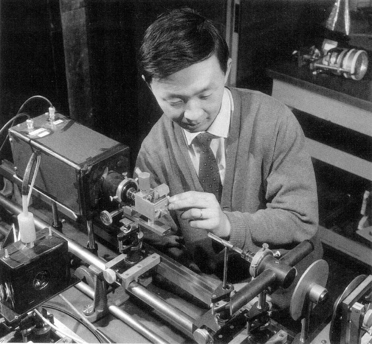

En las comunicaciones, la fibra óptica opera enviando señales de luz a través de finos hilos de fibra de vidrio (y en algunas oportunidades, de fibra de plástico). La fibra óptica comenzó a desarrollarse durante la década de 1970 en laboratorios de investigación y desarrollo en todo el mundo (Corning, Laboratorios Bell, ITT del Reino Unido) y en Dorset, Inglaterra fue instalada comercialmente por primera vez en 1976 por SCT y en Chicago, Illinois en Estados Unidos por AT&T. A principios de la década de 1980, las redes de comunicaciones con fibra conectaban las principales ciudades en cada costa.
A mediados de 1980, la fibra comenzó a reemplazar a todos los enlaces de cobre, de microondas y de satélites de larga distancia utilizados por las empresas de telecomunicaciones. En los 90, los cables de fibra óptica transoceánicos reemplazaron a los satélites utilizados entre la mayoría de los continentes. En la actualidad, la fibra es rentable para la conexión directa al hogar.
La televisión por cable (CATV) descubrió la fibra a mediados de 1990 y, en principio, la utilizó para mejorar la confiabilidad de sus redes, un gran problema en ese entonces. Luego, descubrió que podía ofrecer servicios de telefonía e internet a través de la misma fibra y así ampliaron enormemente sus mercados. A medida que los teléfonos celulares comenzaron a dominar el mercado, sus redes troncales (backbones) se construyeron con fibra.
Las redes informáticas (LAN) comenzaron a utilizar fibra al mismo tiempo que las empresas de telecomunicaciones, a finales de 1970. Entre las primeras aplicaciones que se le dieron a la fibra, se encuentran los enlaces industriales, ya que la inmunidad al ruido como propiedad de la fibra, así como su capacidad en la distancia, hicieron que sea ideal para su uso en la fábrica. Luego, comenzó a utilizarse en centros de datos, en la conexión de visores gráficos y de enlaces de almacenamiento en servidores centrales (mainframes), lo que la hizo ser la predecesora de la actual SAN (red de área de almacenamiento, por sus siglas en inglés). Actualmente, la fibra se utiliza en la mayoría de las redes LAN, ya sea en las redes troncales (backbones), en las conexiones al escritorio para ingenierías, así como en estaciones de trabajo gráficas y puntos de acceso inalámbricos.
También se desarrollaron otras aplicaciones: conexiones con antena a redes de telefonía móvil; canales de datos en automóviles, buques y aeronaves; televisión en circuito cerrado (CCTV) para sistemas de seguridad, e incluso enlaces para sonido estéreo digital destinados al consumo. Entre los mayores usuarios de fibra óptica en la actualidad, se encuentran las municipalidades, que la utilizan para la conexión en escuelas, departamentos, semáforos inteligentes y sistemas de seguridad de CCTV. También incluso se ofrecen conexiones directas de fibra al hogar o a la empresa.
Hoy en día, la fibra óptica es el medio dominante o bien una elección lógica para todo sistema de comunicación. Los costos se han reducido tan notablemente que en la actualidad la fibra hasta el hogar es rentable, especialmente porque puede ofrecer servicios (entretenimiento y comunicaciones) que ningún otro medio ofrece.
